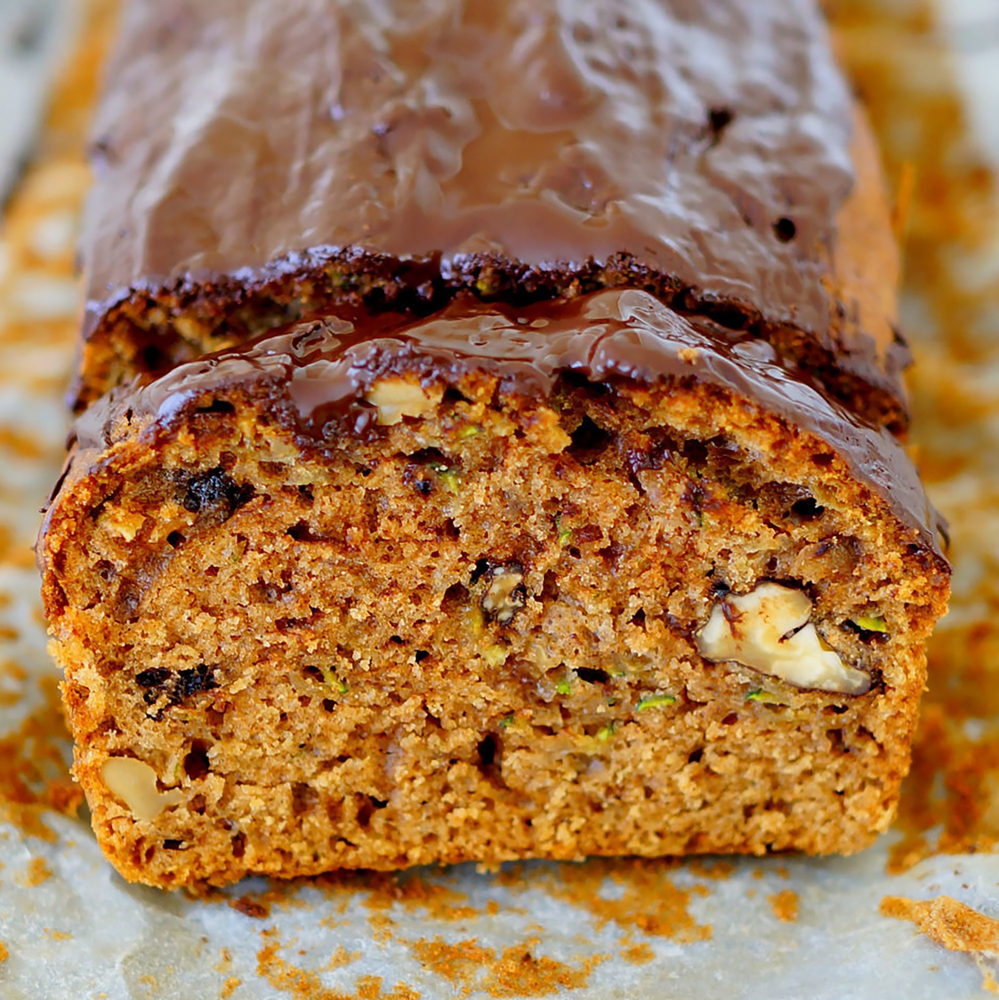

- Prep:20 mins
- Cook:1 hour
- Additional: 10 mins
- Total:1 hr 40 mins
- Servings:24
- Yield:2 loaves
ingredients
- 3 cups all-purpose flour
- 1 teaspoon salt
- 1 teaspoon baking soda
- 1 teaspoon baking powder
- 1 tablespoon ground cinnamon
- 3 eggs
- 1 cup vegetable oil
- 2¼ cups white sugar
- 3 teaspoons vanilla extract
- 2 cups grated zucchini
- 1 cup chopped walnuts